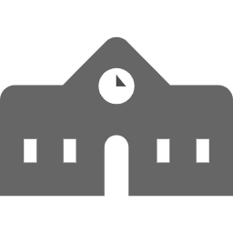

ただいま転職活動中
希望職種：バックエンドエンジニア
学習言語：Ruby on Rails
希望勤務地：大阪、東京
興味を持って頂けましたらご連絡ください
-
 パーソナル情報
パーソナル情報
中満望実（なかみつのぞみ）
1997年01月31日生まれ / 23歳 -
 経歴
経歴
・2019年3月 ： 同志社大学商学部商学科 卒業
・2020年4月 ：飲食業界に就職
「お客様の満足や感動を大切にする」会社ポリシーに惹かれ入社を決意しました。
入社半年後に、社員食堂＆居酒屋部門の店長アシスタントとして配属されました。
店舗の課題はコロナウイルスの影響で来客数が昨年の４割にまで減少してたことでした。
それに対して社内ツールを使わずに、自店舗の調理スタッフを巻き込みながら、当店独自の新メニューを考案し、ランチイベントを企画実行しました。その結果、客単価80円UP、来客数 30人/日UPを達成することができました。 また、お客様からイベントに対する好評な評価を頂きました。
仕事においては、 課題に対して真剣に向き合い、新しい取り組みや改善策に対して果敢に挑戦することを意識していました。
周囲を巻き込みながら課題解決していく力を仕事を通じて学びました。
-
2020年に学習したプログラミングスキル
2020年5月16日から現在まで継続して学習を続けています5月16日〜6月27日( 約1.5ヶ月) ： HTML,CSS,JavaScript(独学）
6月27日〜7月31日( 約１ヶ月) ： JavaScript,jQuery（メンター利用）
8月1日〜8月31日( 約１ヶ月) ： Ruby,Ruby on Rails, git （独学）
9月1日〜現在 ： Ruby,Ruby on Rails（スクール利用）
成果物については下記参照ください
-
 どの様な業務をしたいか
どの様な業務をしたいか
多くの人にとって身近な悩みや不満を解消する画期的なアプリの開発に携わりたいです。
-
どの様なエンジニアになりたいか
短期目標：「即戦力となり、御社にとって欠かせないエンジニア」
まずは持ち前の努力を惜しまない向上心と行動力で、短期間でキャッチアップして即戦力となり、早くキャリアアップしたいと考えております。 入社後は、特に以下の３点を意識していきます。
① 常にアンテナを貼り、新しい技術をインプットに徹する。
② 学んだ技術をインプットだけに留めず、 Qiita投稿や勉強会で発信するなどしてアウトプットにも努める
③ 当事者意識を常に持つ。自分が開発していない部分も、自分だったらどうするかを考える。
中期目標：「仕様通りの実装だけでなく、課題を見つけ技術を通じて解決できるエンジニア」
前職では、常に従業員やお客様の様子を観察し課題や悩みがないかアンテナを張ることや他店舗と比較することで、課題の発見と改善を行ってきました。
この経験を活かして、ユーザー視点と開発者視点の両軸を持ちながら、設計だけでなく開発にも携わりたいと考えております。 ユーザーがどうしたら使いやすいか、世の中にどんな課題やニーズがあるのか常に意識し、見つけた課題を仕様に落とし込んでいくことやチームへ提案・共有を積極的に行います。長期目標：「会社の起爆剤の役割果たすリードエンジニア」
将来は開発業務に軸足を置きつつ、新規事業の設計に挑戦したいと考えています。自身がプロデュースしたサービスやチームを通じて、社会に価値提供することが私の夢です。
自身の強みである「新しいことを挑戦する行動力」を生かして、会社や業界の流れを変える存在となって新規事業立ち上げなどにも挑戦したいと考えています。 その為には世の中にどんな課題があるのかアンテナ張る、そして自分ができることで改善策は作れないかを常に意識し実践する癖付していきます。
 Skill
Skill
-

HTML
-

CSS
-

javascript
-

Ruby
-

Rails
-

Github
-

TOEIC880
 Works
Works

-
 大学時代
大学時代
体育会ラクロス部に所属チーム成績
2018年 関西ラクロスリーグ戦一部リーグ優勝、全日本学生ラクロス選手権２位
2019年 関西ラクロスリーグ戦一部リーグ２位チームでの役割
・オフェンスポジションでプレーヤーとして4年時には公式戦で活躍。
・チームのムードメーカー（声出し、下級生のモチベーション維持）
・合宿、飲み会等の幹事を務め、チームの結束力向上に成功。
・スカウティング班班長として３０人の後輩を束ね、撮影ビデオや分析データの質向上に貢献。

-
英語学習
2019年9月、TOEIC 880点取得
2019年4月1日から1日も休まず英語学習を継続中！
今の恋人は、スコットランド人です！現時点の英語力
・TOEIC８８０レベルを維持
・日常会話であれば外国人と楽しく会話が可能。
・基本的な接客を英語で可能
・英語字幕があれば、映画を楽しむことが可能。
・HTMLとCSSは英語版progateを利用して習得。
学習方法
時間の使い方を工夫。特に通勤時間のルーティン、休日の時間の使い方を綿密に計画
2019年4月〜2019年8月
・TOEIC教材、英単語帳を中心にインプット中心の学習を進める2019年9月〜
実践的に使える英語習得のために、アウトプット中心の学習へ
・ ミートアップや英会話カフェに頻繁に足を運び、英語を使う機会を増やす。
・外国人の友達を作り遊びに行く。
・英語で日記を書く
・瞬間英作文を毎日行う
・海外ドラマやYouTubeを英語字幕で見る。
・日本の漫画を英語で読む、洋書を速読する。
・BillboardやCNNなど興味がある英語記事を毎日読む。
・外国人の友達、恋人を作り遊びに行く。